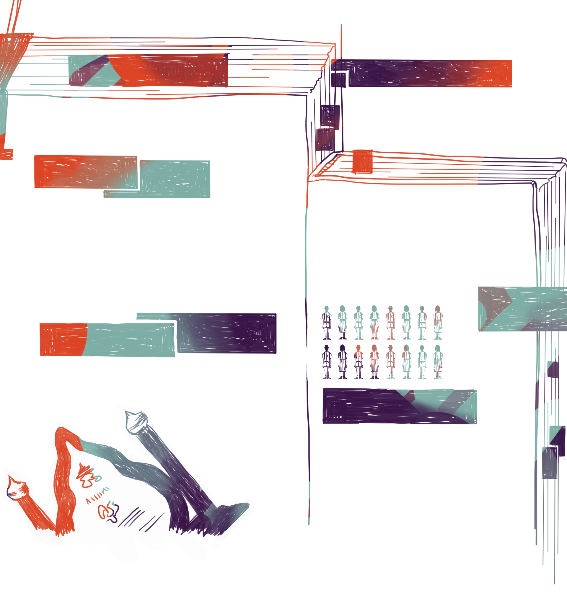

ครูผู้มีบทบาทสำคัญ

จรรยาบรรณต่อตนเอง
ข้อที่ 1 ผู้ประกอบวิชาชีพทางการศึกษา ต้องมีวินัยในตนเองพัฒนาตนเอง
ด้านวิชาชีพ บุคลิกภาพ และวิสัยทัศน์ ให้ทันต่อการพัฒนาทางวิทยาการ
เศรษฐกิจ สังคม และการเมืองอยู่เสมอ
จรรยาบรรณต่อผู้รับบริการ
ข้อที่ 3 ผู้ประกอบวิชาชีพทางการศึกษา ต้องรัก เมตตา
เอาใจใส่ ช่วยเหลือ ส่งเสริม ให้กําลังใจแก่ศิษย์ และผู้รับบริการ
ตามบทบาทหน้าที่โดยเสมอหน้า
ข้อที่ 4 ผู้ประกอบวิชาชีพทางการศึกษา ต้องส่งเสริมให้
เกิดการเรียนรู้ ทักษะ และนิสัยที่ถูกต้องดีงามแก่ศิษย์
และผู้รับบริการ ตามบทบาทหน้าที่อย่างเต็มความสามารถ
ด้วยความบริสุทธิ์ใจ
ข้อที่ 5 ผู้ประกอบวิชาชีพทางการศึกษา ต้องประพฤติ
ปฏิบัติตนเป็นแบบอย่างที่ดี ทั้งทางกาย
วาจา และจิตใจ
ข้อที่ 6 ผู้ประกอบวิชาชีพทางการศึกษา ต้องไม่กระทํา
ตนเป็นปฏิปักษ์ต่อความเจริญทางกาย สติปัญญา จิตใจ
อารมณ์ และสังคมของศิษย์ และผู้รับบริการ
จรรยาบรรณต่อผู้ร่วมประกอบวิชาชีพ
ข้อที่ 8 ผู้ประกอบวิชาชีพทางการศึกษา พึงช่วยเหลือเกื้อกูลซึ่งกันและกัน
อย่างสร้างสรรค์
โดยยึดมั่นในระบบคุณธรรม สร้างความสามัคคีในหมู่คณะ
จรรยาบรรณต่อวิชาชีพ
ข้อที่ 2 ผู้ประกอบวิชาชีพทางการศึกษา ต้องรัก ศรัทธา
ซื่อสัตย์สุจริต รับผิดชอบต่อวิชาชีพ และเป็นสมาชิกที่ดี
ขององค์กรวิชาชีพ
จรรยาบรรณต่อสังคม
ข้อที่ 9 ผู้ประกอบวิชาชีพทางการศึกษา พึงประพฤติปฏิบัติตนเป็นผู้นํา
ในการอนุรักษ์และพัฒนาเศรษฐกิจ สังคม ศาสนา ศิลปวัฒนธรรม ภูมิปัญญา
สิ่งแวดล้อม รักษาผลประโยชน์ของส่วนรวม และยึดมั่นในการปกครอง
ระบอบประชาธิปไตยอันมีพระมหากษัตริย์ทรงเป็นประมุข
ข้อที่ 7 ผู้ประกอบวิชาชีพทางการศึกษา ต้องให้บริการ
ด้วยความจริงใจและเสมอภาค โดยไม่เรียกรับหรือยอมรับ
ผลประโยชน์จากการใช้ตําแหน่งหน้าที่โดยมิชอบ